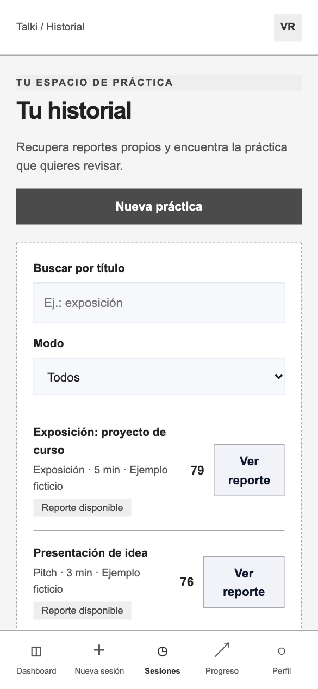
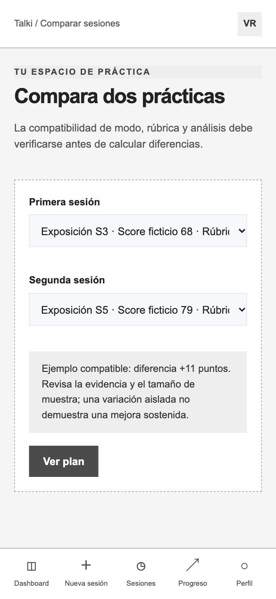
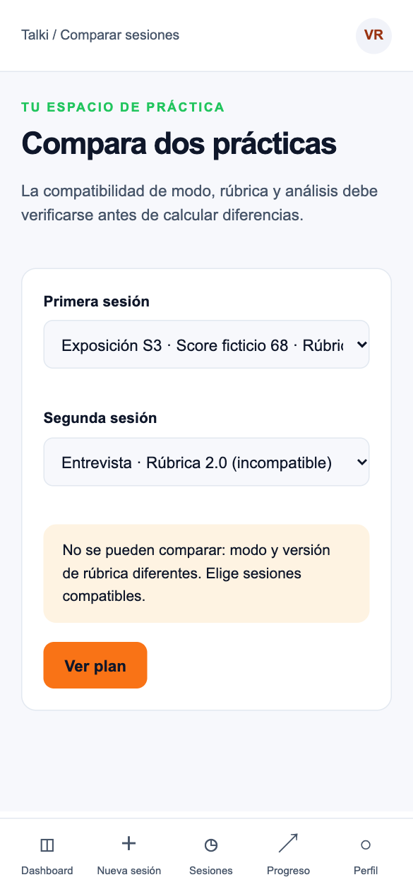
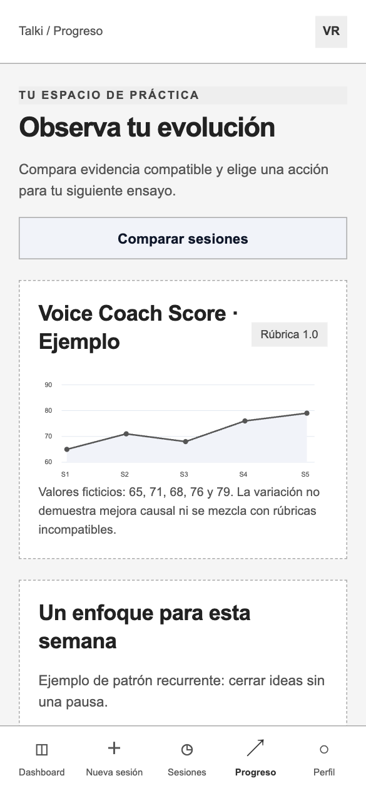

UG-03: Encontrar dos prácticas y comparar evidencia compatible
Valeria y Rodrigo · US20–US22, US24, US36 · Aplicación móvil
1. Buscar y filtrar historial
H02
2. Elegir dos prácticas
G02
3. Comprobar compatibilidad
G02
4. Cambiar la selección
G025. Interpretar tendencia
G01
6. Consultar evidencia
R01
El estado incompatible bloquea la diferencia numérica y solicita cambiar la selección. Sin coincidencias, limpiar filtros; sin historial suficiente, preparar una práctica inicial.